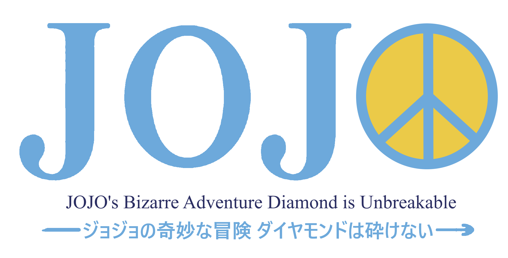

JoJo's Bizarre Adventure: Partie 4
Diamond is Unbreakable (ダイヤモンドは砕けない)

Diamond is Unbreakable (ダイヤモンドは砕けない, Daiyamondo wa Kudakenai),
connu initialement sous le nom Dai 4 Bu: Higashikata Jōsuke (第4部 東方仗助,Partie 4: Jōsuke Higashikata)
est la quatrième partie du manga JoJo's Bizarre Adventure écrit et dessiné par Hirohiko Araki.
Elle a été publiée entre 1992 et 1995 dans le magazine Weekly Shōnen Jump
et comporte 174 chapitres compilés dans les volumes 29 à 46.
Josuke Higashikata, le JoJo de cette partie,
est le protagoniste préféré de l'auteur, l'antagoniste principal, Yoshikage Kira,
son antagoniste préféré et Rohan une sorte d'alter-ego de sa personne.
Un spin-off de cette partie intitulé Rohan au Louvre,
reprenant le personnage de Rohan Kishibe, est sorti en 2010.
| Auteur | Hirohiko Araki |
|---|---|
| Éditeur | 🇯🇵 (ja) Shūeisha 🇫🇷 (fr) J'ai lu, Delcourt Tonkam |
| Prépublication | Weekly Shōnen Jump |
| Sortie initiale | 21 avril 1992 – 21 novembre 1995 |
| Réalisateur | Naokatsu Tsuda, Toshiyuki Kato |
|---|---|
| Scénariste | Yasuko Kobayashi |
| Studio | David Production |
| Compositeur | Yugo Kanno |
| Diffusion | 1er avril 2016 – 23 décembre 2016 |
Introduction (Ch. 1–8)
Avril 1999, au Japon, dans la petite ville de Morio, Koichi Hirose,
un adolescent de 15 ans tombe sur un homme, Jotaro Kujo.
Ce dernier est à la recherche de Josuke Higashikata,
un autre lycéen qui est pris à partie par une bande de voyous au même moment.
Sous l'œil de Jotaro, Josuke les mets à terre grâce à une force invisible et soigne une tortue toujours
grâce à cette capacité. Jotaro lui explique qu'il est venu à Morio pour lui parler de son père
(que Josuke n'a jamais connu) : Joseph Joestar. Grand-père de Jotaro,
Joseph avait eu une aventure avec la mère de Josuke sans savoir qu'il avait eu un fils.
Josuke apprend également que sa capacité s'appelle un Stand, une entité invisible dotée de pouvoir uniques
que seuls d'autres utilisateurs (les manieurs) peuvent
Jotaro enchaîne en expliquant qu'il est également venu à Morio car Joseph (lui aussi manieur)
a identifié un danger qui plane sur la famille de Josuke. Il s'agit d'Anjuro Katagiri dit "Angelo",
un tueur en série qui terrorisait Morio, et s'est échappé de prison. Angelo tue le grand-père de Josuke,
le policier qui l'avait arrêté la première fois, mais, grâce à l'aide de Jotaro, Angelo est emprisonné
dans un bloc de pierre. N'étant pas un manieur de stand inné, Angelo révèle qu'un mystérieux lycéen, originaire de Morio, :
l'avait transpercé avec un arc et une flèche lorsqu'il était en prison ce qui lui avait donné ses pouvoirs.
À la suite de cette agression, Josuke décide de trouver ce lycéen et de veiller sur sa ville.

.jpeg)
L'Arc et la Flèche (Ch. 9–49)
Par hasard, Josuke et Koichi se rendent près d'une maison abandonnée où Koichi se fait transpercé par
la fameuse flèche. Le mystérieux lycéen, caché dans la bâtisse, explique que quiconque est touché par la
flèche peut développer un stand, à l'inverse, s'il n'a pas le potentiel requis, il en meurt. Josuke doit
alors affronter les frères Nijimura, Okuyasu et Keicho. Si Okuyasu devient un allié, son frère tente de
tuer Josuke grâce à son stand Bad Company. Défait, Keicho explique qu'ils cherchaient à créer des manieurs
de stand pour tuer leur père. Ancien suppôt de Dio (antagoniste de Phantom Blood et Stardust Crusaders), leur
paternel avait obtenu une énorme fortune en se faisant implanter des germes de sang. Le vampire tué, les germes
avaient muté, transformant leur père en une créature immortelle douée de peu d'intelligence. Ayant obtenu l'arc et
la flèche via Enya (une autre alliée de Dio), Keicho s'était mis en tête de le tuer pour qu'il connaisse enfin le
repos. Keicho est alors tué par l'une de ses créations, un stand électrique, Red Hot Chili Peppers, qui s'empare
des objets avant de s'enfuir. Lors de leur recherches pour trouver son manieur, Josuke, Koichi et Okuyasu découvrent
que leur ville est rempli de manieurs pacifistes ou belliqueux.
Le 8 mai 1999, transpercé par la flèche et ayant
survécu, Koichi développe lui aussi un stand baptisé Echoes. Jotaro les convoque pour leur annoncer que Joseph
vient à Morio pour les aider grâce à son stand (capable de révèler l'identité d'une personne via une photo).
Red Hot Chili Peppers, qui souhaite ne pas révèler son identité (Akira Otoishi, un musicien), tente de les doubler
en arrivant au port avant eux et de tuer ainsi Joseph, mais il se trouve quand même défait par Josuke. Le calme
revenu dans la ville, Akira est arrêté (pour les vols qu'il a commis grâce à son stand), l'arc et la flèche sont
mis en sécurité et Josuke profite de passer du temps avec son père.

Yoshikage Kira (Ch. 50–99)
Red Hot Chili Peppers défait, Jotaro en profite pour trouver les derniers manieurs qu'Akira avait pu créer.
Koichi, lui, rencontre Rohan Kishibe, un étrange mangaka également manieur, capable de lire la vie de n'importe
qui grâce à son Heaven's Door. Le 13 juin 1999, devenu un allié, Koichi et lui se rendent dans une allée non
indiquée sur les cartes de la ville. Ils y trouvent une adolescente, Reimi Sugimoto et son chien, Arnold, des
fantômes. La jeune fille leur demande de trouver son assassin, un tueur en série qui sévit à Morio depuis des
années et qui n'a jamais été arrêté par la police. Avant de partir, elle leur demande de ne pas se retourner
car des esprits vengeurs ressemblant à des mains emmène quiconque les voit. Koichi et Rohan s'en sortent de justesse
et informent le reste du groupe de la requête de Reimi. Sans le savoir, ils croisent le tueur, un simple employé de
bureau, Yoshikage Kira, qui conserve temporairement les mains de ses victimes comme trophée.
De leur côté, Josuke et Okuyasu deviennent ami avec un collégien, Shigekiyo Yangu dit "Shigechi",
manieur du stand Harvest. Le 24 juin 1999, Yoshikage échange par mégarde son snack (qui contient la main de sa
dernière victime) avec celui de Shigechi. L'assassin réussit à la récupérer, mais Shigechi découvre son identité.
Yoshikage l'élimine en utilisant son Killer Queen, un stand capable de transformer en bombe tout ce qu'il touche et
faisant disparaître de ce fait, les cadavres de ses victimes[9]. Avant de mourir, Shigechi réussit à lui arracher un
bouton de sa veste qu'il transmet à Josuke et Okuyasu. Le 28 juin 1999, Jotaro et Koichi se rendent dans une mercerie
mais Yoshikage, qui a compris qu'il était pris en chasse, les attaque avec une bombe indépendante Sheer Heart Attack.
Le stand de Koichi évolue en Echoes Act 3 et l'arrête en augmentant sa masse.
Yoshikage n'a d'autre choix que d'affronter en personne Koichi et se fait battre par Jotaro.
Il réussit néanmoins à s'enfuir jusqu'au salon Cinderella tenue par une manieuse capable de changer
n'importe quelle partie du corps par celle de quelqu'un d'autre. Kira vole l'identité d'un homme et la
tue avant qu'elle ne révèle à quoi il ressemble dorénavant.

.jpeg)
.jpeg)
La fin de Kira (Ch. 100–174)
N'ayant plus de piste, le groupe se rend à son domicile et y découvre le père Kira,
qui veille sur son fils depuis une photo grâce à son stand. Lui aussi s'enfuit avec une
flèche qu'il possèdait via Enya et créé de nouveaux manieurs pour empêcher que son fils
ne soit découvert. De son côté, Kira endosse le rôle d'un père de famille modeste. Si sa
"femme" tombe éperdument amoureuse de lui, son fils Hayato émet des doutes sur l'identité
de son père. Dans le grenier, Hayato trouve une plante-chat, anciennement un chat transformé
grâce à la flèche du père Kira, que Yoshikage compte utiliser pour se protéger. Yoshikage commet
cependant une erreur en tuant un couple qui l'avait importuné. En sortant de leur appartement,
Yoshikage voit Hayato s'enfuir avec un camescope à la main et comprend qu'il a filmé toute la scène.
Chez eux, Yoshikage, paniqué, le tue et se fait transpercer une seconde fois par la flèche lui permettant
de développer une nouvelle capacité. Le 16 juillet 1999, Hayato est de nouveau en vie et est arrêté par
Rohan qui l'a identifié en prenant des photos. Rohan explose alors et Hayato remonte le temps avant sa
rencontre avec le mangaka. Yoshikage lui explique qu'il lui a greffé une bombe via ses nouveaux pouvoirs.
Baptisée Bites the Dust, si Hayato révèle l'identité de Yoshikage par quelconque moyen, les personnes au
courant explosent sur le champ et une boucle temporelle ramène Hayato quelques heures en arrière.
Après plusieurs échecs, Hayato monte un stratagème en utilisant la plante-chat et pousse Yoshikage à
dire son identité à haute voix. Le tueur se retourne et voit Josuke et Okuyasu qu'Hayato avait prévenu
par téléphone. Un combat s'engage où le père Kira trépasse et son fils est grièvement blessé.
Dans une dernière tentative, Kira tente de greffer Bites the Dust sur une infirmière venu avec des
pompiers à la suite de l'incendie où se déroule l'affrontement. À sa surprise, Yoshikage se retrouve
dans une ruelle. Il y aperçoit Reimi qui lui annonce qu'il est mort. Au moment où il déclenchait son pouvoir,
une ambulance recula sans le voir, l'écrasant par accident. Yoshikage se retourne et est emmené dans les
limbes par les esprits vengeurs.
Vengés, Reimi et son chien partent vers l'autre monde.
Jotaro et Joseph repartent de Morio, laissant Josuke et ses amis veillés sur la ville.
Le manga se conclut en expliquant que les familles des victimes de Yoshikage espèrent toujours leur retour.
.jpeg)
.jpeg)
.jpeg)